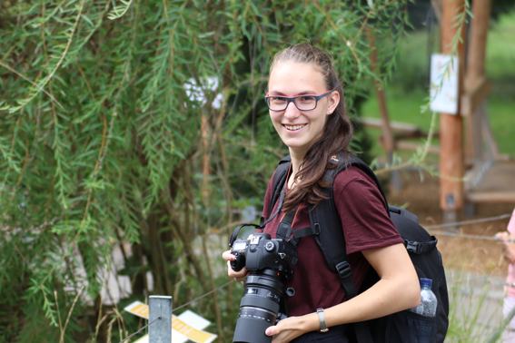

Mein Name ist Alina Hahn, ich bin 20 Jahre alt. Seit dem Sommersemster 2022 studiere ich in Furtwangen Medienkonzeption.
Nebenbei bin ich als Fotografin im Bereich Tierfotografie tätig. Meine Schwerpunkte sind Pferde, Hunde und Katzen. Gerne fotografiere ich diese auch mit ihren Besitzern.
Pferde fotografiere ich nicht nur, ich reite auch selber. Mich begeistert der Umgang mit diesen tollen Geschöpfen.
Außerdem spiele ich im Musikverein Reudern Querflöte.
Im Sommer treten wir regelmäßig auf Festen in der Umgebung auf.
